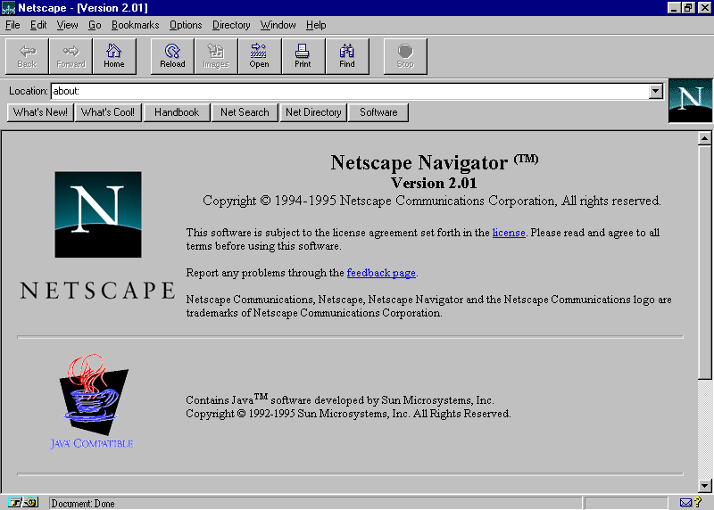
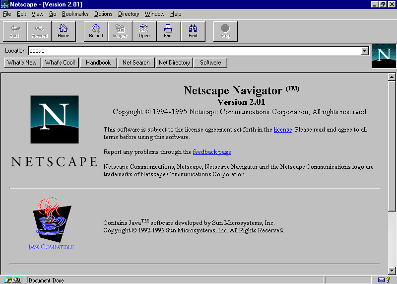

Brendan Eich, jeden z hlavných vývojárov pracujúcich na prehliadači Netscape Navigator, vytvoril scriptovací jazyk určený na automatizáciu a interaktivitu.
LiveScript
v druhej bete Netscape Navigator bol predstavený skriptovací jazyk založený na Jave, LiveScript.
JavaScript
v tretej bete sa podarilo dohodnúť použitie mena Java od Sun Microsystems a jazyk bol premenovaný do finálnej podoby.
# úprava viditeľnosti komponentov
JavaScript nám mimo už spomínanej automatizácie umožňuje upravovať aj rozloženie stránky, jej poradie a jej samotné CSS na základe vstupov, či dynamicky.
Príkladom môže byť aj takéto jednoduché tlačidlo, rovnaké ako každé iné, no s jediným dodatkom - atribútom "onclick".
Atribút onclick nám umožňuje nastaviť funkciu, ktorá sa vykoná po stlačení tlačidla, textu, či obrázku. V našom prípade sme uviedli funkciu "zobrazPopup()", tak si ju teda vytvorme:
<script>
function zobrazPopup() {
document.getElementById("popup").style.display = "block";
document.getElementById("button").setAttribute("onclick", "zavriPopup()");
}
function zavriPopup() {
document.getElementById("popup").style.display = "none";
document.getElementById("button").setAttribute("onclick", "zobrazPopup()");
}
</script>
vlastnosť display určuje, ako sa bude komponent zobrazovať. Stav none znamená, že sa komponent nezobrazí, kdežto stav block znamená, že sa pre komponent vytvorí priestor.
po stlačení tlačidla sa spustí funkcia zobrazPopup(), ktorá zobrazí popup a zmení funkciu tlačidla na zavriPopup(). Po jeho opätovnom stlačení sa teda popup skryje a na tlačidlo sa vráti pôvodná funkcia.
vyskúšaj to!
zobrazil sa popup s id "popup" a tlačidlo zmenilo hodnotu atribútu onclick na "zavriPopup()".
Paráda, funguje to!
# úprava atribútov komponentov
No... super. Kde ale ešte môžeme takúto úpravu atribútov použiť? No, napríklad pri obrázkovom carouseli:
<script>
imgindex = 0;
var imgs = document.getElementsByClassName("img");
load();
function load() {
for (var i = 0; i < imgs.length; i++) {
imgs[i].style.display = "none";
}
imgs[imgindex].style.display = "block";
}
function img(n) {
if ((imgs.length-1 < (imgindex+n)) || (imgindex+n < 0)) {
return;
}
imgindex += n;
for (var i = 0; i < imgs.length; i++) {
imgs[i].style.display = "none";
}
imgs[imgindex].style.display = "block";
}
</script>
Po načítaní stránky sa vytvorí array
(zoznam) so všetkými div-mi s
triedou "img". Každej sa nastaví
hodnota atribútu display na "none"
a prvej sa nastaví "block".
Po spustení funkcie img(n) sa
vezme argument n a vypočíta sa,
ktorý obrázok sa zobrazí.
# úprava číselných hodnôt atribútov
Rovnako, ako môžeme zmeniť hodnoty atribútov, môžeme meniť ich veľkosti dynamicky a teda za behu.
Príkladom môže byť využitie JavaScriptu pre dynamickú zmenu šírky napr. sidebaru. Nakoľko nám css umožňuje nastaviť prechody na dané zmeny, vzniká nám možnosť animovať zviditelnenie prvkov.
Použitie funkcie zmeny šírky prvku nám umožňuje animovať tento prechod
medzi nulovou a plnou šírkou.
Použili sme aj CSS atribút z-index, ktorý nám umožňuje umiestniť
prvok nad všetky ostatné (ako vrstvy vo Photoshope).
Po stlačení tlačidla sa nám teda zväčší šírka sidebaru, čo spôsobí
jeho zviditelnenie. Toto zviditelnenie vyvolá CSS animáciu prechodu.
# dynamická zmena obsahu stránky
Posledným príkladom použitia JavaScriptu na webových stránkach je dynamická zmena obsahu stránky. Je využívaná napríklad v realtime formulároch, v minulosti na sociálnych sieťach a pri embedoch.


 
